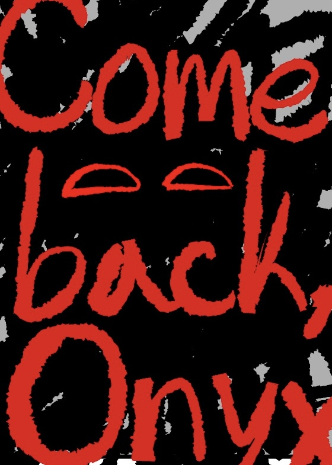

STAFF IDENTIFICATION CARD

오닉스
사번 : UE-B890
직급 : 책임자
소속 : 백룸 부서
보안 등급 : LEVEL 6
담당 업무 :
BACKROOM 탐사 승인 및 변칙 구역 관리
상태 : ● ONLINE
STAFF DATABASE
PERSONAL INFORMATION
FULL NAME : ONYX
DEPARTMENT : BACKROOM DEPARTMENT
HEIGHT : 218cm
SPECIES : INK
AGE : UNCERTAINTY
IQ : 128
FAMILY RELATIONS : UNKNOWN
PERSONAL RECORD
자신 이외의 존재를 발견할 경우 장난을 먼저 시도하는 성향을 보인다.
행동 방식이 시비로 오해되는 경우가 있으나, 대부분의 직원들과 원만한 관계를 유지하고 있다.
백룸 부서 내 불화 발생 기록은 거의 존재하지 않는다.
PHYSICAL CHARACTERISTICS
백룸 투입 이전에는 장난스러운 태도를 보이나, 탐사 시작 후 태도가 완전히 변화한다.
LEVEL 6 및 LEVEL 7 구역에서는 항상 진중한 모습을 유지한다.
BODY ANALYSIS
촉수
척추를 따라 세로 방향으로 갈라진 검은 개방부가 존재한다.
내부에서는 생물학적 기관이 확인되지 않으며, 다수의 촉수 구조가 존재한다.
촉수는 제한 없이 외부로 방출 가능하나, 과도한 사용 시 신체 손상 가능성이 확인됨.
⚠ 촉수 과다 사용으로 인한 신체 붕괴 위험
입
구강 기관이 존재하지 않는다.
섭취 활동은 불필요하며, 체내 기관을 통한 영양 합성이 이루어진다.
소통을 위해 개인 수첩과 펜을 사용한다.
눈
시각 기능은 정상이며, 일반 생물보다 빠르게 위험 요소를 발견하는 경우가 있다.
BEHAVIOR ANALYSIS
책임자 자리가 공석이었던 당시, 본인이 책임자가 되는 것을 원하지 않는 모습을 보였다.
그러나 최종적으로 직위를 거부하지 않았으며, 현재 백룸 부서 5대 책임자로 활동 중이다.
SPECIAL OBSERVATION
- 개인용 수첩 및 펜 항상 소지
- 직원들과의 의사소통은 기록 방식으로 진행
- LEVEL 6 이상 탐사 시 극도로 신중한 행동 확인
- 장난스러운 평소 모습과 탐사 시 모습의 차이가 큼
⚠ NOTANDUM
백룸 책임자는 현재 5대째 계승 중이다.
이전 책임자 및 과거 기록에 대한 언급은 오닉스 앞에서 자제할 것을 권장한다.
⚠ LEVEL 7 단독 배치 금지
⚠ 시야 밖 이동 금지
⚠ 이상 행동 발생 시 즉시 대화 유지
⚠ 환각 증상 확인 시 움직임 제한 필요
그의 능력은 백룸 탐사 인원 보호를 위해 사용되지만, 동시에 높은 위험성을 가진다.
SYSTEM NOTE
ENTITY TYPE : INK
CURRENT STATUS :
AUTHORIZED STAFF
DATA STABILITY : 87%